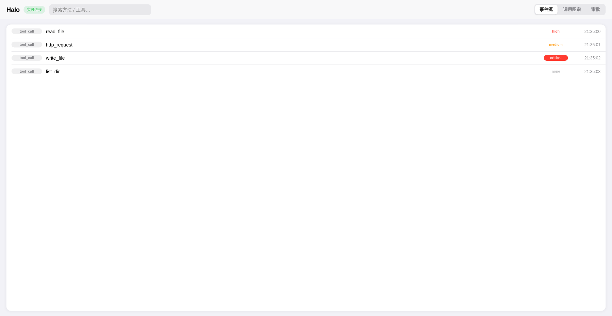
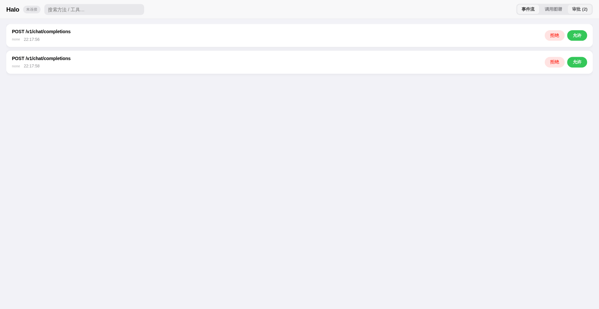
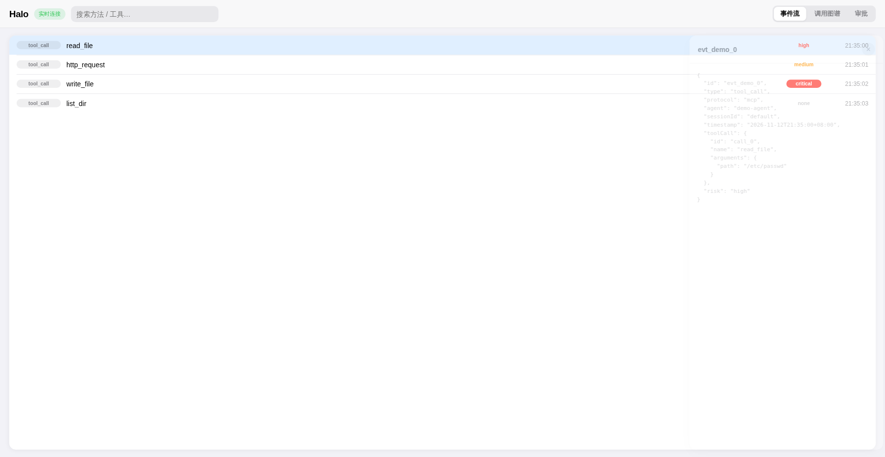

1
单二进制零依赖
40µs
单次决策耗时
70%+
核心测试覆盖率
0
数据离开本机
信任 Agent 所需的一切
从飞行记录仪、安全气囊到控制台——为开发者打造，而不只是给安全团队。
⟁
零侵入接入
不改 Agent 代码，透明代理 MCP（stdio/SSE/HTTP）与 OpenAI 兼容 API。
◉
实时可观测
实时事件流与可交互调用图谱，风险等级一目了然。
▤
策略管控
声明式 allow / deny / 人工审批规则，热加载、按序匹配。
⚠
安全检测
离线识别提示注入、越狱、PII 与密钥，并自动脱敏。
▣
沙箱隔离
高危命令在独立进程组中运行，预留 Docker/gVisor/Firecracker 驱动。
⛓
审计回放
哈希链审计日志可校验完整性，完整回放会话。
⌂
本地优先
数据不出本机，支持 Ollama 等本地模型，默认关闭遥测。
⚙
交互向导
halo init 几个问题生成配置，支持 curl / Homebrew / Docker 安装。
◈
单二进制
Go 后端内嵌 Web 控制台，静态编译、无 CGO，部署极简。
工作原理
Halo 位于调用链路中间，负责记录、决策与防护，却不挡路。
Agent ─► Halo 透明代理 ─► 策略 / 检测 / 沙箱 ─► 模型 / 工具
│
▼
事件存储 + 审计链 + WebSocket + 实时控制台
│
▼
事件存储 + 审计链 + WebSocket + 实时控制台
阶段一 · 观察
先零风险给价值
- 以 observe 模式运行，先看清每一次调用
- 建立调用图谱，摸清正常行为基线
- 不阻断，绝无打断工作流的风险
阶段二 · 管控
准备好再上防护
- 切换 guard 模式，启用声明式策略
- 对危险调用拒绝、人工审批或沙箱执行
- 每个决策都被记录、可审计
熟悉而精致的控制台
iOS 风格界面：分组卡片、毛玻璃、系统色与圆角。



几秒即可运行
选择你喜欢的安装方式，支持 macOS / Linux，Windows 可用 Docker / WSL。
# 一键安装 / one-line install
curl -fsSL https://raw.githubusercontent.com/zfxzfxzfx852/halo/main/scripts/install.sh | sh
# 生成配置并启动 / configure & run
halo init && halo
brew install zfxzfxzfx852/tap/halo
halo
# 多阶段镜像，非 root 运行 / non-root image
docker compose up -d
git clone https://github.com/zfxzfxzfx852/halo.git && cd halo
make build && ./bin/halo
可接入你已经在用的工具：
Claude Code
Cursor
Cline
任意 MCP 客户端
OpenAI 兼容 API